Kurumların doğru yetenekleri çekmesini, geliştirmesini ve elde tutmasını sağlayan sistematik bir yetenek yönetimi yaklaşımı kurmak.
Her kurum farklidir. Size ozel yaklasim, metodoloji ve uygulama planiyla yaninizdayiz.
✓ 24 Saat Icinde Yanit ✓ Kuruma Ozel Cozum ✓ 30+ Yil Deneyim
Danismanlik ihtiyaclarinizi paylasin, size ozel cozum tasarlayalim.